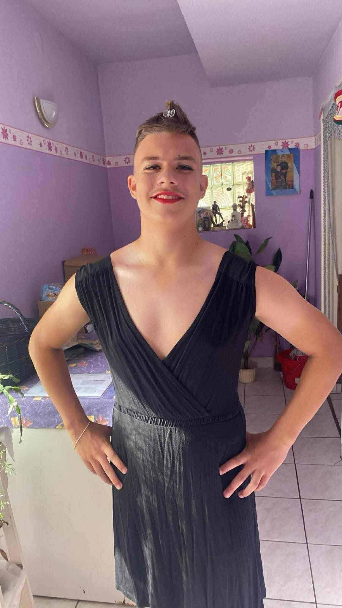

|

|
Személyes adatokNév: Tóth BenjáminNem: Nem tudni Születési hely: Híd alatt Születési idő: Dínók előtt Állampolgárság: Nógrádi Kedvenc zenéje: |
Története:Tóth Benjámin – vagy ahogy a faluban emlegetik: „A Földi Lény, Akinek Minden Napszakhoz Van Egy Ruhája” – már kiskora óta különleges jelenség volt. A legenda szerint bölcsőjét az első pillanattól kezdve csillámpor borította, pedig a családban senki sem emlékszik arra, hogy valaha is vettek volna csillámot. A születési rejtély A dokumentumok szerint Benjámin valahol „a béka segge alatt” született, ami ugyan geográfiailag nem szerepel a Google Mapsen, de a helyiek ezt a kifejezést úgy használják, mint mások a „Zemplént”: tisztelettel és némi félelemmel. A születésének pontos pillanata „rendszer váltás előtt” történt, ami több kutató szerint arra utal, hogy épp akkor csatlakoztatták be a családnál a kábeltévét. A nagy stílusmutáció Már 4 évesen kiderült, hogy Benjámin különleges: minden farsangon ő választotta a jelmezeket a többieknek… akarva-akaratlanul. Ha valaki cowboy akart lenni, Benjámin így szólt: „Cowboy? Ugyan már, te sokkal inkább tökéletesen mutatnál rózsaszín flamingóként.” És igaza volt: mindig igaza volt. A sors akkor fordult igazán nagyot, amikor rájött: a ruhák világában ő nem csupán vendég – ő a főszereplő. Innentől kezdve Benjámin képes volt bármilyen szettet olyan magabiztosan viselni, mintha legalább három stylist állna mögötte, plusz egy motivációs tréner. A nógrádi ikon születése A faluban a következő mondás kering: „Ha Benjámin megjelenik, a levegőbe kerül egy cseppnyi rúzsillat és mindenki kicsit jobban érzi magát.” A képen látható karakter tekintete pedig mindent elárul: „Igen, tudom, hogy jól nézek ki. Nincs mit.” Állítólag egyszer egy konditeremben is feltűnt estélyiben, csak azért, hogy bizonyítsa: a súlyemelés és a magassarkú nem egymást kizáró fogalmak. A legenda szerint amikor guggolt, a padlólapok megtapsolták. A jövő A helyiek biztosak benne, hogy Benjámin előtt nagy jövő áll: lehet belőle smink-guru, motivációs előadó, konditermi divatforradalmár, vagy egyszerűen csak Nógrád legfényesebb csillaga. Egy dolog biztos: Ha Benjámin valahová belép, ott azonnal 12%-kal nő a drámaiság és 34%-kal a jókedv. |
Kapcsolódó körözésekTanár bosszantása – Btk. 420.§Órai rendbontás – Btk. 666.§ |